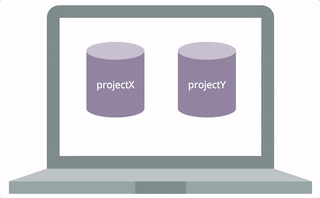

Chapter 4 Git and GitHub
A frightening number of people still email their code to each other, have dozens of versions of the same file, and lack any structured way of backing up their work for inevitable computer failures. This is both time consuming and error prone.
And that is why they should be using git.
This chapter will introduce you to git command-line program and the GitHub cloud storage service, two wonderful tools that track changes to your code (git) and facilitate collaboration (GitHub). Git and GitHub are the industry standards for the family of tasks known as version control. Being able to manage changes to your code and share it with others is one of the most important technical skills a programmer can learn, and is the focus of this (lengthy) chapter.
4.1 What is this git thing anyway?

Git is an example of a version control system. Eric Raymond defines version control as
A version control system (VCS) is a tool for managing a collection of program code that provides you with three important capabilities: reversibility, concurrency, and annotation.
Version control systems work a lot like Dropbox or Google Docs: they allow multiple people to work on the same files at the same time, to view and “roll back” to previous versions. However, systems like git different from Dropbox in a couple of key ways:
New versions of your files must be explicitly “committed” when they are ready. Git doesn’t save a new version every time you save a file to disk. That approach works fine for word-processing documents, but not for programming files. You typically need to write some code, save it, test it, debug, make some fixes, and test again before you’re ready to save a new version.
For text files (which almost all programming files are), git tracks changes line-by-line. This means it can easily and automatically combine changes from multiple people, and gives you very precise information what what lines of code changes.
Like Dropbox and Google Docs, git can show you all previous versions of a file and can quickly rollback to one of those previous versions. This is often helpful in programming, especially if you embark on making a massive set of changes, only to discover part way through that those changes were a bad idea (we speak from experience here 😱 ).
But where git really comes in handy is in team development. Almost all professional development work is done in teams, which involves multiple people working on the same set of files at the same time. Git helps the team coordinate all these changes, and provides a record so that anyone can see how a given file ended up the way it did.
There are a number of different version control systems in the world, but git is the de facto standard—particularly when used in combination with the cloud-based service GitHub.
4.1.1 Git Core Concepts
To understand how git works, you need to understand its core concepts. Read this section carefully, and come back to it if you forget what these terms mean.
repository (repo): A database containing all the committed versions of all your files, along with some additional metadata, stored in a hidden subdirectory named
.gitwithin your project directory. If you want to sound cool and in-the-know, call a project folder a “repo.”commit: A set of file versions that have been added to the repository (saved in the database), along with the name of the person who did the commit, a message describing the commit, and a timestamp. This extra tracking information allows you to see when, why, and by whom changes were made to a given file. Committing a set of changes creates a “snapshot” of what that work looks like at the time—it’s like saving the files, but more so.
remote: A link to a copy of this same repository on a different machine. Typically this will be a central version of the repository that all local copies on your various development machines point to. You can push (upload) commits to, and pull (download) commits from, a remote repository to keep everything in sync.
merging: Git supports having multiple different versions of your work that all live side by side (in what are called branches), whether those versions are created by one person or many collaborators. Git allows the commits saved in different versions of the code to be easily merged (combined) back together without you needing to manually copy and paste different pieces of the code. This makes it easy to separate and then recombine work from different developers.
4.1.2 Wait, but what is GitHub then?
Git was made to support completely decentralized development, where developers pull commits (sets of changes) from each other’s machines directly. But most professional teams take the approach of creating one central repository on a server that all developers push to and pull from. This repository contains the authoritative version the source code, and all deployments to the “rest of the world” are done by downloading from this centralized repository.
Teams can setup their own servers to host these centralized repositories, but many choose to use a server maintained by someone else. The most popular of these in the open-source world is GitHub. In addition to hosting centralized repositories, GitHub also offers other team development features, such as issue tracking, wiki pages, and notifications. Public repositories on GitHub are free, but you have to pay for private ones.
In short: GitHub is a site that provides as a central authority (or clearing-house) for multiple people collaborating with git. Git is what you use to do version control; GitHub is one possible place where repositories of code can be stored.
4.2 Installation & Setup
This chapter will walk you through all the commands you’ll need to do version control with git. It is written as a “tutorial” to help you practice what you’re reading!
If you haven’t yet, the first thing you’ll need to do is install git. You should already have done this as part of setting up your machine.
The first time you use git on your machine, you’ll need to configure the installation, telling git who you are so you can commit changes to a repository. You can do this by using the git command with the config option (i.e., running the git config command):
# enter your full name (without the dashes)
git config --global user.name "your-full-name"
# enter your email address (the one associated with your GitHub account)
git config --global user.email "your-email-address"Setting up an SSH key for GitHub on your own machine is also a huge time saver. If you don’t set up the key, you’ll need to enter your GitHub password each time you want to push changes up to GitHub (which may be multiple times a day). Simply follow the instructions on this page to set up a key, and make sure to only do this on your machine.
4.2.1 Creating a Repo
The first thing you’ll need in order to work with git is to create a repository. A repository acts as a “database” of changes that you make to files in a directory.
In order to have a repository, you’ll need to have a directory of files. Create a new folder git_practice on your computer’s Desktop. Since you’ll be using the command-line for this course, you might as well practice creating a new directory programmatically:
Making a folder with the command-line.
You can turn this directory into a repository by telling the git program to run the init action:
# run IN the directory of project
# you can easily check this with the "pwd" command
git initThis creates a new hidden folder called .git inside of the current directory (it’s hidden so you won’t see it in Finder, but if you use ls -a (list with the all option) you can see it there). This folder is the “database” of changes that you will make—git will store all changes you commit in this folder. The presence of the .git folder causes that directory to become a repository; we refer to the whole directory as the “repo” (an example of synechoche).
Note that because a repo is a single folder, you can have lots of different repos on your machine. Just make sure that they are in separate folders; folders that are inside a repo are considered part of that repo, and trying to treat them as a separate repository causes unpleasantness. Do not put one repo inside of another!
Multiple folders, multiple repositories.
4.2.2 Checking Status
Now that you have a repo, the next thing you should do is check its status:
git statusThe git status command will give you information about the current “state” of the repo. For example, running this command tells us a few things:
- That you’re actually in a repo (otherwise you’ll get an error)
- That you’re on the
masterbranch (think: line of development) - That you’re at the initial commit (you haven’t committed anything yet)
- That currently there are no changes to files that you need to commit (save) to the database
- What to do next!
That last point is important. Git status messages are verbose and somewhat awkward to read (this is the command-line after all), but if you look at them carefully they will almost always tell you what command to use next.
If you are ever stuck, use git status to figure out what to do next!
This makes git status the most useful command in the entire process. Learn it, use it, love it.
4.3 Making Changes
Since git status told you to create a file, go ahead and do that. Using your favorite editor, create a new file books.md inside the repo directory. This Markdown file should contain a list of 3 of your favorite books. Make sure you save the changes to your file to disk (to your computer’s harddrive)!
4.3.1 Adding Files
Run git status again. You should see that git now gives a list of changed and “untracked” files, as well as instructions about what to do next in order to save those changes to the repo’s database.
The first thing you need to do is to save those changes to the staging area. This is like a shopping cart in an online store: you put changes in temporary storage before you commit to recording them in the database (e.g., before hitting “purchase”).
We add files to the staging area using the git add command:
git add filename(Replacing filename with the name/path of the file/folder you want to add).
You can also add all the contents of the directory (tracked or untracked) to the staging area with:
git add .(This is what I tend to use, unless I explicitly don’t want to save changes to some files.)
WARNING: This will add everything in
your current directory to your git repo, unless ignored through the
.gitignore file (see below). This may include your top secret passwords,
gigabytes of data, all your illegally ripped dvds, and just files that are
unnecessary to upload.
Add the books.md file to the staging area. And of course, now that
you’ve changed the repo (you put something in the staging area), you
should run git status to see what it says to do. Notice that it tells
you what files are in the staging area, as well as the command to
unstage those files (remove them from the “cart”).
4.3.2 Committing
When you’re happy with the contents of your staging area (e.g., you’re ready to purchase), it’s time to commit those changes, saving that snapshot of the files in the repository database. We do this with the git commit command:
git commit -m "your message here"The "your message here" should be replaced with a short message saying what changes that commit makes to the repo (see below for details).
WARNING: If you forget the -m option, git will put you into a command-line text editor so that you can compose a message (then save and exit to finish the commit). If you haven’t done any other configuration, you might be dropped into the vim editor. Type :q (colon then q) and hit enter to flee from this horrid place and try again, remembering the -m option! Don’t panic: getting stuck in vim happens to everyone.
4.3.2.1 Commit Message Etiquette
Your commit messages should be informative about what changes the commit is making to the repo. "stuff" is not a good commit message. "Fix critical authorization error" is a good commit message.
Commit messages should use the imperative mood ("Add feature" not "added feature"). They should complete the sentence:
If applied, this commit will {your message}
Other advice suggests that you limit your message to 50 characters (like an email subject line), at least for the first line—this helps for going back and looking at previous commits. If you want to include more detail, do so after a blank line.
A specific commit message format may also be required by your company or project team. See this post for further consideration of good commit messages.
Finally, be sure to be professional in your commit messages. They will be read by your professors, bosses, coworkers, and other developers on the internet. Don’t join this group.
After you’ve committed your changes, be sure and check git status, which should now say that there is nothing to commit!
4.3.3 Commit History
You can also view the history of commits you’ve made:
git log [--oneline]This will give you a list of the sequence of commits you’ve made: you can see who made what changes and when. (The term HEAD refers to the most recent commit). The optional --oneline option gives you a nice compact version. Note that each commit is listed with its SHA-1 hash (the random numbers and letters), which you can use to identify each commit.
4.3.4 Reviewing the Process
This cycle of “edit files”, “add files”, “commit changes” is the standard “development loop” when working with git.
The local git process.
In general, you’ll make lots of changes to your code (editing lots of files, running and testing your code, etc). Then once you’re at a good “break point”—you’ve got a feature working, you’re stuck and need some coffee, you’re about to embark on some radical changes—you will add and commit your changes to make sure you don’t lose any work and you can always get back to that point.
4.3.4.1 Practice
For further practice using git, perform the following steps:
- Edit your list of books to include two more books (top 5 list!)
- Add the changes to the staging area
- Commit the changes to the repository
Be sure and check the status at each step to make sure everything works!
You can also add more files besides books.md, such as movies.md or
restaurants.md.
When your repository grows, you can check which files are tracked by git, both already
committed and in the staging area, by
git ls-files(Note that git status does not mention tracked files that are not changed.)
4.3.5 The .gitignore File
Sometimes you want git to always ignore particular directories or files in your project. For example, if you use a Mac and you tend to organize your files in the Finder, the operating system will create a hidden file in that folder named .DS_Store (the leading dot makes it “hidden”) to track the positions of icons, which folders have been “expanded”, etc. This file will likely be different from machine to machine. If it is added to your repository and you work from multiple machines (or as part of a team), it could lead to a lot of merge conflicts (not to mention cluttering up the folders for Windows users).
You can tell git to ignore files like these by creating a special hidden file in your project directory called .gitignore (note the leading dot). This file contains a list of files or folders that git should “ignore” and pretend don’t exist. The file uses a very simple format: each line contains the path to a directory or file to ignore; multiple files are placed on multiple lines. For example:
# This is an example .gitignore file
# Mac system file; the leading # marks a comment
.DS_Store
# example: don't check in passwords or ssl keys!
secret/my_password.txt
# example: don't include large files or libraries
movies/my_four_hour_epic.movNote that the easiest way to create the .gitignore file is to use your preferred text editor (e.g., Atom); select File > New from the menu and choose to make the .gitignore file directly inside your repo.
If you are on a Mac, we strongly suggest globally ignoring your .DS_Store file. There’s no need to ever share or track this file. To always ignore this file on your machine, simply run these lines of code:
# Run these lines on your terminal to configure git to ignore .DS_Store
git config --global core.excludesfile ~/.gitignore
echo .DS_Store >> ~/.gitignoreSee this article for more information.
4.4 GitHub and Remotes
Now that you’ve gotten the hang of git, let’s talk about GitHub. GitHub is an online service that stores copies of repositories in the cloud. These repositories can be linked to your local repositories (the one on your machine, like you’ve been working with so far) so that you can synchronize changes between them.
- The relationship between git and GitHub is the same as that between your camera and Imgur: git is the program we use to create and manage repositories; GitHub is simply a website that stores these repositories. So we use git, but upload to/download from GitHub.
Repositories stored on GitHub are examples of remotes: other repos that are linked to your local one. Each repo can have multiple remotes, and you can synchronize commits between them.
Each remote has a URL associated with it (where on the internet the remote copy of the repo can be found), but they are given “alias” names (like browser bookmarks). By convention, the remote repo stored on GitHub’s servers is named origin, since it tends to be the “origin” of any code you’ve started working on.
Remotes don’t need to be stored on GitHub’s computers, but it’s one of the most popular places to put repos.
4.4.1 Forking and Cloning
In order to use GitHub, you’ll need to create a free GitHub account, which you should have done as part of setting up your machine.
Next, you’ll need to download a copy of a repo from GitHub onto your own machine. Never make changes or commit directly to GitHub: all development work is done locally, and changes you make are then uploaded and merged into the remote.
Start by visiting this link. This is the web portal for an existing repository. You can see that it contains one file (README.md, a Markdown file with a description of the repo) and a folder containing a second file. You can click on the files and folder to view their source online, but again you won’t change them there!
Just like with Imgur or Flickr or other image-hosting sites, each GitHub user has their own account under which repos are stored. The repo linked above is under the course book account (info201). And because it’s under our user account, you won’t be able to modify it—just like you can’t change someone else’s picture on Imgur. So the first thing you’ll need to do is copy the repo over to your own account on GitHub’s servers. This process is called forking the repo (you’re creating a “fork” in the development, splitting off to your own version).
To fork a repo, click the “Fork” button in the upper-right of the screen:

The fork button on GitHub’s web portal.
This will copy the repo over to your own account, so that you can upload and download changes to it!
Students in the INFO 201 course will be forking repos for class and lab execises, but not for homework assignments (see below)
Now that you have a copy of the repo under your own account, you need to download it to your machine. We do this by using the clone command:
git clone [url]This command will create a new repo (directory) in the current folder, and download a copy of the code and all the commits from the URL you specify.
You can get the URL from the address bar of your browser, or you can click the green “Clone or Download” button to get a popup with the URL. The little icon will copy the URL to your clipboard. Do not click “Open in Desktop” or “Download Zip”.
Make sure you clone from the forked version (the one under your account!)
Warning also be sure to
cdout of thegit_practicedirectory; you don’t want tocloneinto a folder that is already a repo; you’re effectively creating a new repository on your machine here!
Note that you’ll only need to clone once per machine; clone is like init for repos that are on GitHub—in fact, the clone command includes the init command (so you do not need to init a cloned repo).
4.4.2 Pushing and Pulling
Now that you have a copy of the repo code, make some changes to it! Edit the README.md file to include your name, then add the change to the staging area and commit the changes to the repo (don’t forget the -m message!).
Although you’ve made the changes locally, you have not uploaded them to GitHub yet—if you refresh the web portal page (make sure you’re looking at the one under your account), you shouldn’t see your changes yet.
In order to get the changes to GitHub, you’ll need to push (upload) them to GitHub’s computers. You can do this with the following command:
git push origin masterThis will push the current code to the origin remote (specifically to its master branch of development).
- When you cloned the repo, it came with an
origin“bookmark” to the original repo’s location on GitHub!
Once you’ve pushed your code, you should be able to refresh the GitHub webpage and see your changes to the README!
If you want to download the changes (commits) that someone else made, you can do that using the pull command, which will download the changes from GitHub and merge them into the code on your local machine:
git pullBecause you’re merging as part of a pull, you’ll need to keep an eye out for merge conflicts! These will be discussed in more detail in chapter 14.
Pro Tip: always pull before you push. Technically using git push causes a merge to occur on GitHub’s servers, but GitHub won’t let you push if that merge might potentially cause a conflict. If you pull first, you can make sure your local version is up to date so that no conflicts will occur when you upload.
4.4.3 Reviewing The Process
Overall, the process of using git and GitHub together looks as follows:
The remote git process.
4.5 Course Assignments on GitHub
For students in INFO 201: While class and lab work will use the “fork and clone” workflow described above, homework assignments will work slightly differently. Assignments in this course are configured using GitHub Classroom, which provides each student private repo (under the class account) for the assignment.
Each assignment description in Canvas contains a link to create an assignment repo: click the link and then accept the assignment in order to create your own code repo. Once the repository is created, you should clone it to your local machine to work. Do not fork your asssignment repo.
DO NOT FORK YOUR ASSIGNMENT REPO.
After cloning the assignment repo, you can begin working following the workflow described above:
- Make changes to your files
- Add files with changes to the staging area (
git add .) - Commit these changes to take a repo (
git commit -m "commit message") - Push changes back to GitHub (
git push origin master) to turn in your work.
Repeat these steps each time you reach a “checkpoint” in your work to save it both locally and in the cloud (in case of computer problems).
4.6 Command Summary
Whew! You made it through! This chapter has a lot to take in, but really you just need to understand and use the following half-dozen commands:
git statusCheck the status of a repogit addAdd file to the staging areagit commit -m "message"Commit changesgit cloneCopy repo to local machinegit push origin masterUpload commits to GitHubgit pullDownload commits from GitHub
Using git and GitHub can be challenging, and you’ll inevitably run into issues. While it’s tempting to ignore version control systems, they will save you time in the long-run. For now, do your best to follow these processes, and read any error messages carefully. If you run into trouble, try to understand the issue (Google/StackOverflow), and don’t hesitate to ask for help.